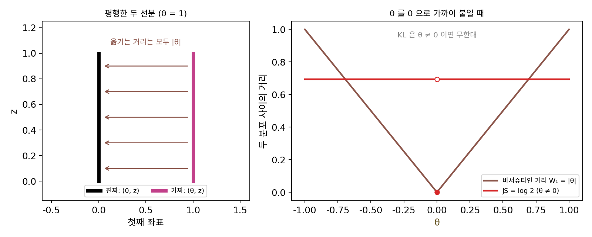
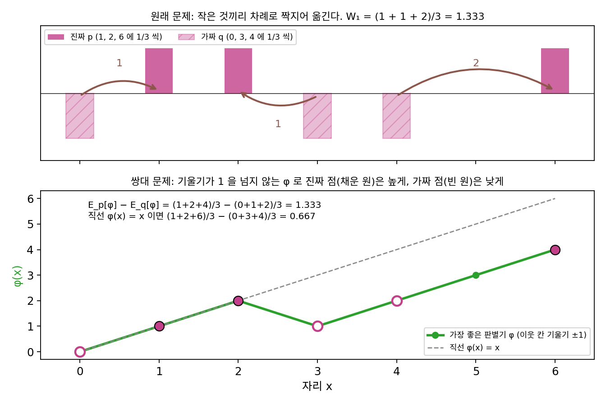
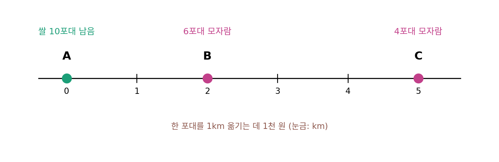
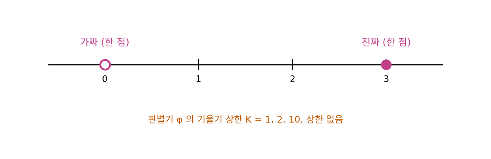
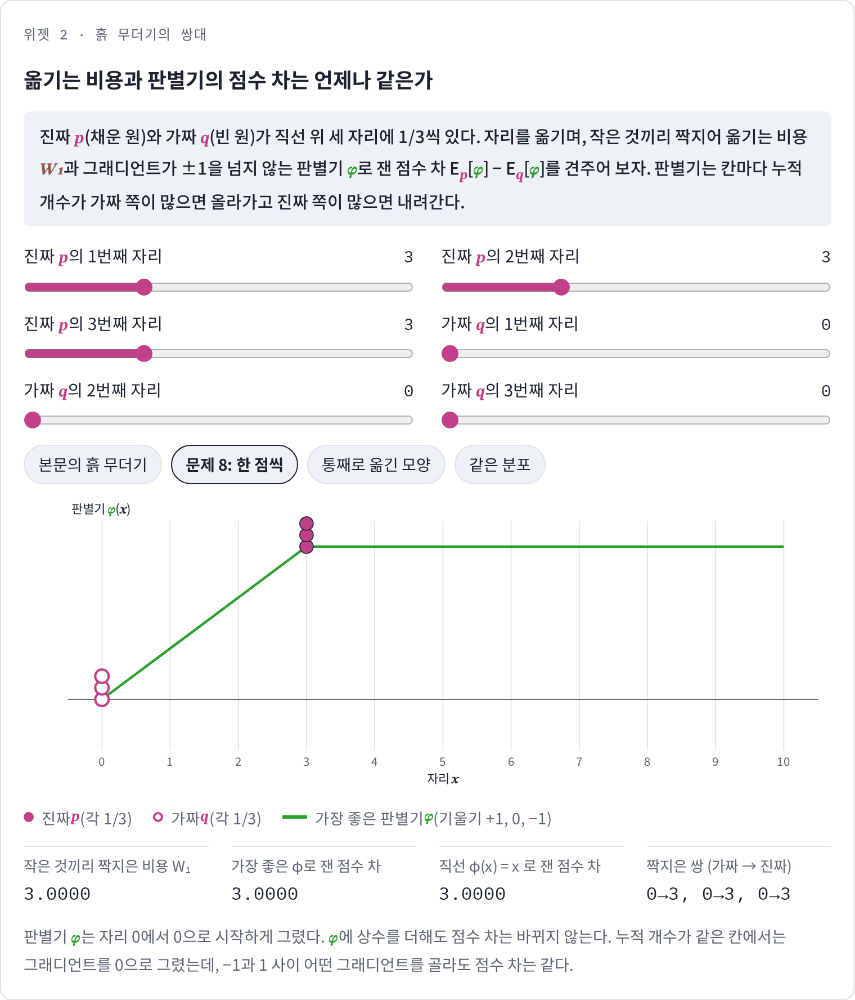
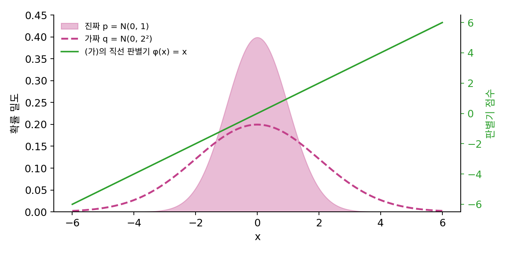

칸토로비치–루빈슈타인 쌍대: 1-립시츠 판별기로 잰 점수 차
좁은 봉우리의 표에서 JS가 log 2에 붙어 있을 때도, 봉우리를 옮기는 거리 |θ|는 어디서나 기울기 1로 생성기를 진짜 쪽으로 끌어당겼다. 분포를 흙 무더기로 보고, 한 무더기를 다른 무더기 모양으로 옮기는 데 드는 가장 작은 「옮긴 양 × 거리」의 합을 바서슈타인 거리 W₁이라 한다. 생성기가 이 거리를 줄이게 하면 그래디언트가 사라지는 문제는 없다. 그런데 스텝마다 생성기가 만든 샘플 수천 개와 진짜 사진 수천 개를 가장 싸게 짝짓는 수송 문제를 풀어야 한다면, 그 계산이 학습보다 무겁다. 판별기처럼 신경망 하나를 학습시켜서 W₁을 잴 수 있다면 수송 문제를 풀지 않아도 될 텐데, 그러려면 판별기는 어떤 함수여야 할까?
역사: 칸토로비치와 루빈슈타인, 그리고 아홉 날
흙 무더기를 옮기는 문제를 선형계획으로 풀고 그 쌍대를 세운 사람은 레오니트 칸토로비치(Leonid Kantorovich)다. 그는 1957년의 짧은 글과, 1958년 레닌그라드 대학의 학술지에 동료 게나디 루빈슈타인(Gennadii Rubinstein)과 함께 실은 「완전 가법 함수들의 공간에 대하여」에서 이 거리를 함수 공간의 거리로 일반화했다. 칸토로비치를 가까이서 본 레닌그라드의 수학자 아나톨리 베르시크(Anatoly Vershik)의 회고에 따르면, 이 논문에는 수송 계획이 가장 좋은지를 가리는 기준이 립시츠 함수, 곧 그래디언트 길이(직선 위에서는 기울기)가 1을 넘지 않는 「가격」 함수의 말로 들어 있었다. 흙을 실제로 옮겨 보지 않고도, 자리마다 붙인 가격표 하나로 비용을 잴 수 있다는 것이다.
칸토로비치–루빈슈타인 쌍대가 생성 모델로 넘어온 것은 반세기가 훌쩍 지나서다. 아르좁스키와 보투는 2017년 1월 17일에 JS 가 왜 생성기를 막는지 따진 논문을 공개했고, 아흐레 뒤인 1월 26일에 페이스북 AI 연구소의 수미스 친탈라(Soumith Chintala)와 셋이서 「바서슈타인 GAN(Wasserstein GAN)」을 공개했다(ICML 2017). 그들의 처방은 판별기를 칸토로비치–루빈슈타인의 가격표로 쓰는 것이었다. 진짜일 확률 대신 점수를 매긴다는 뜻에서 판별기를 「비평가(critic)」라고 불렀고, 평행한 두 직선 분포를 예로 들어 JS 와 KL 은 직선을 아무리 가까이 붙여도 줄지 않는데 바서슈타인 거리는 떨어진 거리만큼 줄어든다는 것을 보였다.


쌍대가 1958년에 이미 있었는데 GAN 에 쓰기까지 왜 60년 가까이 걸렸어요? 판별기 자리에 가격표를 넣기만 하면 되잖아요.

가격표를 어떻게 적을지 생각해 볼까요? 흙 무더기가 자리 세 개에 있으면 가격표는 숫자 몇 개죠?
세 개요. 자리마다 하나씩.

64 × 64 컬러 사진이면 한 장이 숫자 12,288개로 된 점이에요. 그 공간의 모든 점에 가격을 붙인 표는요?

표로는 못 적어요. 점이 끝도 없으니까 함수로 적어야 하고, 그 함수를 데이터에 맞춰 찾아야 하네요. 신경망을 학습시키는 일이요.

칸토로비치 쪽에는 그런 함수를 맞출 도구가 없었고, GAN 쪽에는 판별기라는 함수는 있었지만 JS 가 왜 생성기를 막는지는 2017년 1월에야 따져졌네요.
그래요. 그 따짐이 나오고 아흐레 만에 WGAN 이 나왔죠. 다만 판별기를 가격표로 쓰려면 판별기가 지켜야 할 조건이 있어요.

어떤 조건을 지키면 흙을 옮기는 비용과 같은 점수 차가 나오는 거예요?
흙 무더기 세 개
쌍대가 정말 같은 값을 내는지 손으로 확인할 수 있는 작은 예를 보자. 직선 위에서 진짜 분포 p는 자리 1, 2, 6에, 가짜 분포 q는 자리 0, 3, 4에 흙이 1/3씩 있다. 두 분포가 엇갈려 놓여 있어서 「가짜를 통째로 한쪽으로 밀면 된다」는 답이 통하지 않게 골랐다.
먼저 원래 문제를 풀자. 직선 위에서는 작은 것끼리 차례로 짝짓는 것이 가장 싸다. 0 → 1, 3 → 2, 4 → 6으로 옮기면 거리가 1, 1, 2이고, 1/3씩이니 W₁ = (1 + 1 + 2)/3 = 1.333이다.
이번에는 흙을 옮기지 않고 자리마다 점수 φ(x)를 매겨 보자. 진짜 자리의 평균 점수에서 가짜 자리의 평균 점수를 뺀 Ep[φ] − Eq[φ]를 크게 하고 싶다. 단, 어느 두 자리의 점수 차도 두 자리 사이의 거리를 넘지 못한다. 점수를 그냥 자리 값으로 매기는 φ(x) = x는 이 조건을 지키고, 점수 차는 (1 + 2 + 6)/3 − (0 + 3 + 4)/3 = 0.667이다. 더 잘할 수 있다. 이웃한 칸마다 점수를 1씩 올리거나 내릴 수 있으니, 가짜가 몰린 칸 3에서 점수를 한 번 내렸다가 다시 올리면 된다. 자리 0부터 6까지 점수를 0, 1, 2, 1, 2, 3, 4로 매기면 점수 차는 (1 + 2 + 4)/3 − (0 + 1 + 2)/3 = 1.333이다. 선형계획으로 모든 경우를 따져도 이보다 큰 점수 차는 없으니, 흙을 옮기는 비용과 같은 1.333이 가장 큰 점수 차다.
이렇게 두 분포 사이의 바서슈타인 거리가, 그래디언트 길이가 1을 넘지 않는 함수로 잰 두 분포의 평균 점수 차 가운데 가장 큰 값과 같다는 사실을 칸토로비치–루빈슈타인 쌍대 (옮기는 비용 = 1-립시츠 판별기의 가장 큰 점수 차 / Kantorovich–Rubinstein duality)라 한다. 「그래디언트 길이가 1을 넘지 않는다」는 어느 두 점에서든 출력 차이가 입력 차이를 넘지 않는다는 뜻이고, 이것이 립시츠 상수(두 점 사이에서 출력의 차이가 입력의 차이의 몇 배까지 될 수 있는가)가 1 이하인 함수, 곧 1-립시츠 함수다.
왜 두 값이 같을까? 한쪽 부등식은 바로 보이는데, 어떤 옮기는 방법이 가짜 y를 진짜 x로 보낸다면, 1-립시츠인 φ에 대해 φ(x) − φ(y) ≤ |x − y|다. 짝마다 더하면 점수 차는 그 방법의 비용을 넘지 못한다. 어떤 점수표든 어떤 옮기는 방법보다 크지 않으니, 가장 큰 점수 차는 가장 작은 비용 아래에 있다. 둘이 같아진다는 것이 칸토로비치와 루빈슈타인이 보인 것이고, 이때 가장 좋은 점수표는 짝지어 옮기는 길 위에서 그래디언트 길이가 정확히 1이다. 위의 점수표에서도 0 → 1, 4 → 6의 길 위에서는 기울기가 +1, 3 → 2의 길 위에서는 −1이다. 직선 위에서는 칸마다 「거기까지 쌓인 가짜가 진짜보다 많으면 올리고, 적으면 내리는」 규칙이 가장 좋은 점수표를 준다.

이제 생성기의 목표를 JS 대신 W₁으로 바꿀 수 있다. 판별기 φ는 1-립시츠라는 제약 안에서 진짜 샘플의 평균 점수와 가짜 샘플의 평균 점수의 차를 키우고, 생성기는 같은 차를 줄인다. 여전히 최소최대 문제이지만, 판별기가 가장 잘했을 때 생성기가 받는 값이 JS 처럼 log 2에 붙지 않고 떨어진 거리만큼 자란다. 아르좁스키와 동료들은 그래서 판별기를 끝까지 학습시켜도 된다고 보고, 생성기가 한 스텝 갈 때 판별기를 다섯 스텝씩 학습시켰다.
ML에서: 학습 곡선이 그림의 질을 따라간다
아르좁스키와 동료들이 가장 앞세운 결과는 학습 곡선이었다. 판별기가 잰 점수 차, 곧 W₁의 추정값이 학습 내내 꾸준히 줄었고, 그 곡선이 사람이 눈으로 본 그림의 질과 잘 맞았다고 보고했다. 원래 GAN 의 판별기 손실로 잰 JS 추정값은 그림이 좋아지는 동안에도 늘거나 그대로였으니, 「손실이 줄고 있는가」라는 신호가 두 신경망의 놀이에 돌아온 것이다. 그들은 또 실험한 어느 구조에서도 WGAN 이 모드 붕괴를 보이지 않았다고 적었다.
문제 7. 쌀 가격표
직선 도로 위 마을 A(0km)에 쌀이 10포대 남고, B(2km)는 6포대, C(5km)는 4포대가 모자란다. 쌀 한 포대를 1km 옮기는 데 1천 원이 든다. (가) 가장 싼 운송비는? (나) 상인이 마을마다 쌀 한 포대의 가격표를 붙여, A에서 10포대를 사서 B에 6포대, C에 4포대를 판다. 어느 두 마을의 가격 차도 그 사이를 옮기는 운송비보다 크면 안 된다(크면 다른 상인이 사다가 옮겨 팔아 버린다). 가격표 (A, B, C) = (0, 2, 5), (0, 1, 3), (0, 2, 7), (1, 3, 6)천 원에서 상인이 남기는 돈은? (다) 조건을 지키는 가격표로 남길 수 있는 가장 큰 돈은 (가)와 어떤 관계인가?

(가)는 6포대를 2km, 4포대를 5km 옮기면 6 × 2 + 4 × 5 = 32천 원이에요. (나)는 가격 차를 크게 할수록 많이 남으니까 (0, 2, 7)이 40천 원으로 제일 좋네요.
(0, 2, 7)은 조건을 지키나요? B와 C 사이를 보세요.
B에서 C까지 3km인데 가격 차가 5천 원이에요. 누가 B에서 2천 원에 사다가 3천 원 들여 C에 옮기면 7천 원에 팔 수 있으니 2천 원이 남아요. 가격표가 버티지 못하네요.
나머지 셋은요?
조건을 지키는 건 (0, 2, 5)가 32천 원, (0, 1, 3)이 18천 원, (1, 3, 6)이 32천 원이에요.

조건을 지키는 가격표 가운데 가장 큰 32천 원이 (가)의 운송비 32천 원과 같아. 가격을 거리만큼 꽉 채워 올린 게 가장 좋은 가격표야. (1, 3, 6)처럼 모두 1천 원씩 올려도 똑같이 32고.

가격표로 남기는 돈이 운송비보다 커질 수는 없다는 건 어떻게 알 수 있죠?
포대 하나가 A에서 B로 가면 상인이 남기는 가격 차는 운송비 이하니까… 포대마다 더하면 남는 돈 전체가 운송비 이하예요.
같아지는 건 언제죠?
가장 싼 운송 방법이 지나는 길마다 가격 차를 운송비와 같게 맞추면요.
이 쌀 문제를 바서슈타인 거리에 맞대면 무엇이 무엇이죠?
쌀이 흙 무더기고, 가격표가 판별기 φ겠네요.

「가격 차 ≤ 운송비」가 1-립시츠 조건이고요. 가격표 전체에 같은 돈을 더해도 남는 돈이 그대로인 것도 판별기에 상수를 더해도 점수 차가 그대로인 것과 같아요.

중고 거래 앱에서 동네마다 시세가 택배비보다 더 차이 나면 되팔이가 몰려서 결국 시세 차가 택배비만큼으로 좁혀지는 거랑 같네요. 시세가 가격표고, 택배비가 운송비예요.
문제 8. 기울기 상한을 풀면
진짜 분포는 자리 3 한 점, 가짜 분포는 자리 0 한 점이다. (가) 이 둘의 바서슈타인 거리는? (나) 판별기 φ의 기울기가 1을 넘지 않을 때 가장 큰 점수 차 φ(3) − φ(0)은? 기울기 상한을 2, 10으로 풀어 주면? (다) 기울기 상한을 아예 없애면 점수 차는 무엇을 재는가? (풀어 본 뒤 위젯 2의 「문제 8: 한 점씩」으로 확인해 보자.)

(가)는 한 점을 3만큼 옮기니 3이에요. (나)는 상한 1이면 φ(3) − φ(0) ≤ 3이니 3이고, 상한을 풀면 판별기가 더 잘 가르니까 더 정확해지겠죠?
상한이 2이면 가장 큰 점수 차는 얼마죠? 그 값이 두 분포의 거리를 더 정확히 잰 건가요?

2면 6, 10이면 30이에요. 거리는 3 그대로인데 점수 차만 커지네요. 상한을 없애면 끝없이 커지고요.
상한이 K면 점수 차가 정확히 K × 3이야. 판별기 모양은 같고 눈금만 K배 늘어난 거지. 상한이 없으면 점수 차는 두 분포가 다르다는 것만 알려 주고 「얼마나」는 잃어버려. 그건 문제 5의 JS가 겹치지 않으면 log 2에 붙던 것과 같은 병이야.
그럼 상한을 꼭 1로 맞춰야 할까요, 아니면 어떤 정해진 K로 묶어 두기만 하면 될까요?
음, 점수 차가 K × W₁이 되니까 생성기가 줄이는 방향은 같고 크기만 K배예요. 그럼 정해진 K로 묶기만 하면 될 것 같아요.
크기가 K배인 건 학습률로 흡수하면 되겠네.

중요한 건 상한이 「있어서」 끝없이 커지지 못하게 막는 거예요. 해석학에서 상한(sup)이 무한대이면 그 정의가 아무 정보도 안 주던 것과 같네요.

시험 점수를 100점 만점으로 매기든 10점 만점으로 매기든 등수는 같은데, 만점이 없으면 누가 잘했는지 비교가 안 되는 거군요.
위젯 2에서 문제 8 설정을 불러와, 기울기 상한 1에서 가장 큰 점수 차와 옮기는 비용을 맞대 보세요.

문제 9. 분산만 다른 두 정규분포
진짜 분포 p = N(0, 1), 가짜 분포 q = N(0, 2²)로, 평균은 같고 표준편차만 다르다. (가) 판별기를 직선 φ(x) = x로 두면 점수 차 Ep[φ] − Eq[φ]는? (나) 1-립시츠인 판별기 가운데 점수 차가 가장 큰 것은 어떤 모양이고, 그 값은? 샘플 20만 개씩으로 확인하라. (다) φ(x) = −x²/4를 쓰면 점수 차가 0.7526인데, 이 값을 바서슈타인 거리로 읽어도 되는가?

판별기를 직선으로 두면 평균 차이를 재니까 0.0002예요. 평균이 같으니 사실상 0이고요. 그럼 두 분포가 거의 같다는 뜻 아니에요?
두 분포는 같나요? 가짜의 샘플은 진짜보다 어디에 더 많이 있죠?
가짜는 두 배로 퍼져 있으니까 0에서 먼 곳에 더 많아요. 다른 분포인데 직선 판별기가 그걸 못 본 거네요.
0에서 멀수록 점수를 낮게 주면 되지 않을까? φ(x) = −|x|는 기울기가 ±1이라 1-립시츠고.
그 판별기의 점수 차는요?
E|가짜| − E|진짜| = 2√(2/π) − √(2/π) = √(2/π) = 0.7979예요.
샘플로 재면 0.8008이고, 작은 것끼리 차례로 짝지어 잰 바서슈타인 거리도 0.8008로 같아.
(다)의 −x²/4는 0.7526으로 꽤 가까운데요?
그 함수는 기울기의 크기가 |x|/2라서… |x| > 2에서 1을 넘어요. 1-립시츠가 아니에요.
그래도 0.7526이면 0.7979에 가까운데, 근삿값으로는 쓸 수 있지 않아?
제약을 넘은 판별기의 점수 차는 참값보다 늘 작을까요?
아니요, 이번엔 우연히 참값보다 작게 나왔을 뿐이에요. 제약을 넘은 판별기의 점수 차는 어느 쪽으로도 틀릴 수 있어요. 쌍대의 오른쪽 식에 들어갈 자격이 없으니까요. 제약 안에서 잰 값만 바서슈타인 거리의 아래쪽 추정값이에요.
판별기를 신경망으로 만들면, 직선보다 복잡한 −|x| 같은 모양을 그릴 수 있어야 하고, 동시에 제약도 지켜야 하는 거네요. 둘 다 하라니 숙제가 둘이에요.